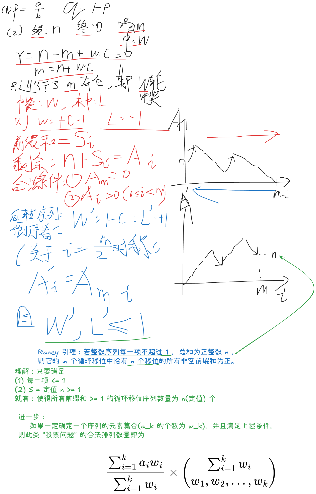

2026牛客暑期多校训练营3
B 再买一瓶
Problem Description
一瓶饮料售价 元。
每次小明喝完一瓶饮料，他会以 的概率获奖。如果获奖，他将得到 元；否则，他什么也得不到。
他得到的钱可以用来购买更多饮料。每瓶饮料的获奖事件相互独立。
小明一开始有 元。求他恰好喝完 瓶饮料后花光所有钱的概率。
Input
每个测试文件包含多组测试数据。第一行包含测试数据的组数 ()。
接下来 行，每行包含五个整数 (，)，表示小明一开始有 元，每次获奖得到 元，获奖概率为 ；你需要求出他恰好喝完 瓶饮料的概率。
Output
输出 行，每行包含一个整数：对应测试数据的答案对 取模的结果。
形式化地，设 。可以证明，答案可以表示为最简分数 ，其中 和 为整数且 。输出等于 的整数。
Sample Input
4
1 1 2 1 2
1 3 2 1 2
2 2 3 1 3
1 2 2 1 2Sample Output
499122177
873463809
776412275
0Hint
在第一组测试数据中，恰好喝完 瓶的唯一方式是第一瓶没有获奖，其概率为 。
在第二组测试数据中，恰好喝完 瓶的唯一方式是第一瓶获奖且接下来两瓶都没有获奖，其概率为 。
在第四组测试数据中，小明一开始有 元，每次获奖得到 元，因此他不可能恰好喝完 瓶。
Solution
Raney 引理：投票问题的结论，从 到 ，最大上升步长 ，符合 前缀约束 的序列数量的结论
Raney 引理：若整数序列每一项不超过 （） ，总和为正整数 （） ，则它的 （） 个循环移位中恰有 个移位的所有非空前缀和为正。

Code
#include<bits/stdc++.h>
using namespace std;
const int N = 2e6 + 5, mod = 998244353;
int n, m, c, a, b;
int fac[N], invfac[N];
int ksm(int a, int b = mod - 2) {
int res = 1;
for (; b; b >>= 1, a = 1LL * a * a % mod) if (b & 1) res = 1LL * res * a % mod;
return res;
}
void init() {
fac[0] = 1;
for (int i = 1; i < N; i++) fac[i] = 1LL * fac[i - 1] * i % mod;
invfac[N - 1] = ksm(fac[N - 1]);
for (int i = N - 1; i >= 1; i--) invfac[i - 1] = 1LL * invfac[i] * i % mod;
}
int C(int i, int j) {
if (i < j) return 0;
return 1LL * fac[i] * invfac[j] % mod * invfac[i - j] % mod;
}
void solve() {
cin >> n >> m >> c >> a >> b;
if (m - n < 0 || (m - n) % c) {
cout << 0 << "\n";
return;
}
int k = (m - n) / c;
int p = 1LL * a * ksm(b) % mod;
int q = (1 - p + mod) % mod;
cout << 1LL * n * ksm(m) % mod * C(m, k) % mod * ksm(p, k) % mod * ksm(q, m - k) % mod << "\n";
}
int main() {
init();
ios::sync_with_stdio(0); cin.tie(0); cout.tie(0);
int T = 1;
cin >> T;
while (T--) solve();
}G 矩阵标记
Problem Description
给定一个 的数字网格，每个格子中包含一个正整数。
如果存在两个格子 和 满足 且 ，且这两个格子中的数字相等，那么所有满足 且 的格子 都会被标记。
输出整个网格最终的标记情况。
Input
每个测试文件仅包含一组测试数据。
第一行包含两个整数 (，)。
接下来 行，每行包含 个整数；其中第 行包含 ()，描述该数字网格。
Output
输出 行，每行包含一个长度为 、由字符 0 和 1 组成的字符串。
第 行的第 个字符为 1 表示格子 最终被标记，为 0 表示未被标记。
Sample Input
2 6
1 2 3 4 5 6
7 8 9 3 4 10Sample Output
001110
001110Hint
在样例中，第 1 行第 3 列的格子和第 2 行第 4 列的格子都含有数字 3，因此它们标记了两行中第 3 列到第 4 列的所有格子。
第 1 行第 4 列的格子和第 2 行第 5 列的格子都含有数字 4，因此它们标记了两行中第 4 列到第 5 列的所有格子。两个矩形的并集即为最终答案。